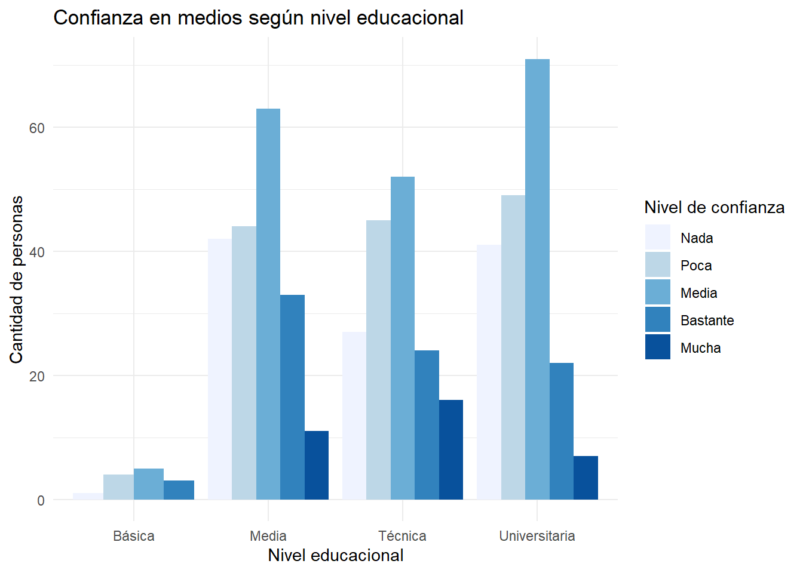

[1] "conf_gob" "conf_partidos" "conf_medios" "conf_congreso"
[5] "sexo" "edad" "nivel_educ" "region_dicot" Trabajo_3_OPT
Introducción
Este trabajo analiza la confianza en los medios de comunicación en Chile a partir de la base de datos ELSOC 2022. La investigación busca responder cómo varía esta confianza según la edad, el sexo y el nivel educacional de las personas. Se plantea como hipótesis que, a mayor nivel educacional, menor sería la confianza en los medios. En esta tercera entrega se retoma el análisis descriptivo del Trabajo 2 y se incorpora el estudio de asociación entre variables, junto con la construcción de un índice de confianza institucional y su consistencia interna mediante alfa de Cronbach.
Dando una perspectiva sociológica, según Habermas, los medios de comunicación son relevantes ya que participan en la formación de la opinión pública y en circulación de discursos dentro del espacio público. @habermas1998
Construcción de un índice de confianza institucional
Para la construcción del índice de confianza institucional, se consideran las variables de confianza en el gobierno, los partidos políticos, el congreso y los medios de comunicación, ya que todas remiten a una misma dimensión general: la confianza hacia instituciones relevantes de la vida social y política. Estas variables permiten observar la confianza en los medios dentro de un marco más amplio de confianza institucional.
En esta etapa, a diferencia del trabajo anterior, se avanza en la construcción del índice mediante la combinación de estas variables y la evaluación de su consistencia interna a través del alfa de Cronbach. Esto permite analizar si las variables seleccionadas se relacionan entre sí de manera suficiente para ser utilizadas como una escala de confianza institucional.
Min. 1st Qu. Median Mean 3rd Qu. Max. NA's
1.000 1.333 1.750 1.921 2.333 5.000 1721 El índice de confianza institucional fue construido a partir del promedio de las variables de confianza en el gobierno, partidos políticos, congreso y medios de comunicación. Los resultados muestran que el índice varía entre 1 y 5, donde valores más bajos indican menor confianza institucional y valores más altos indican mayor confianza. El promedio del índice es de 1,92, lo que indica que, en general, la confianza institucional de las personas encuestadas tiende a ubicarse en niveles bajos. La mediana es de 1,75, lo que refuerza esta tendencia hacia una baja confianza institucional. Además, se observan 1721 casos perdidos, por lo que los resultados deben interpretarse considerando esta limitación.
Tabla de variables principales
| edad | nivel_educ | conf_medios | |
|---|---|---|---|
| edad | 1.00 | -0.41 | 0.16 |
| nivel_educ | -0.41 | 1.00 | -0.08 |
| conf_medios | 0.16 | -0.08 | 1.00 |
La tabla presenta las correlaciones de Spearman entre edad, nivel educacional y confianza en los medios de comunicación. En primer lugar, se observa una asociación negativa moderada entre edad y nivel educacional (-0,41), lo que indica que, en esta muestra, a mayor edad tiende a observarse un menor nivel educacional. Respecto a la relación entre edad y confianza en los medios, la correlación es positiva pero débil (0,16), lo que sugiere que las personas de mayor edad tienden a presentar niveles levemente más altos de confianza en los medios.
En cuanto a la relación central de la hipótesis, entre nivel educacional y confianza en los medios, se observa una correlación negativa muy débil (-0,08). Esto va en la dirección de la hipótesis planteada, ya que sugiere que a mayor nivel educacional podría disminuir la confianza en los medios; sin embargo, la asociación es baja, por lo que no se puede afirmar que exista una relación fuerte entre ambas variables.
En conjunto, los resultados muestran asociaciones débiles entre las variables sociodemográficas y la confianza en los medios, por lo que la hipótesis encuentra un apoyo parcial, pero limitado.
Gráfico bivariado: confianza en medios según nivel educacional

El gráfico muestra la distribución de los niveles de confianza en los medios de comunicación según el nivel educacional de las personas encuestadas. En todos los grupos educativos, la mayor cantidad de respuestas se concentra en el nivel de confianza media, especialmente entre quienes tienen educación media, técnica y universitaria. También se observa que los niveles de confianza bastante y mucha son menos frecuentes, sobre todo en el grupo universitario. En este sentido, el gráfico permite observar que la confianza en los medios tiende a ubicarse principalmente en niveles bajos e intermedios, lo que se relaciona parcialmente con la hipótesis de que a mayor nivel educacional podría disminuir la confianza en los medios.
Tabla de correlaciones
| conf_gob | conf_partidos | conf_congreso | conf_medios | |
|---|---|---|---|---|
| conf_gob | 1.00 | 0.47 | 0.39 | 0.14 |
| conf_partidos | 0.47 | 1.00 | 0.53 | 0.19 |
| conf_congreso | 0.39 | 0.53 | 1.00 | 0.31 |
| conf_medios | 0.14 | 0.19 | 0.31 | 1.00 |
La tabla presenta las correlaciones de Spearman entre las variables de confianza institucional: confianza en el gobierno, partidos políticos, congreso y medios de comunicación. En general, se observan asociaciones positivas entre todas las variables, lo que indica que quienes tienden a confiar más en una institución también suelen presentar mayores niveles de confianza en otras. La relación más fuerte se observa entre confianza en partidos políticos y confianza en el congreso, con una correlación de 0,53, seguida por la relación entre confianza en el gobierno y partidos políticos, con 0,47. En cambio, la confianza en los medios presenta asociaciones más débiles con el gobierno y los partidos políticos, aunque mantiene una relación moderada con el congreso. Esto sugiere que la confianza en los medios se vincula con la confianza institucional general, pero de manera menos intensa que las instituciones políticas entre sí.
Alfa de Cronbach
Reliability analysis
Call: psych::alpha(x = confianza_institucional)
raw_alpha std.alpha G6(smc) average_r S/N ase mean sd median_r
0.64 0.67 0.64 0.34 2.1 0.0088 1.9 0.72 0.35
95% confidence boundaries
lower alpha upper
Feldt 0.63 0.64 0.66
Duhachek 0.63 0.64 0.66
Reliability if an item is dropped:
raw_alpha std.alpha G6(smc) average_r S/N alpha se var.r med.r
conf_gob 0.60 0.62 0.56 0.36 1.7 0.0105 0.0289 0.32
conf_partidos 0.52 0.53 0.45 0.28 1.1 0.0127 0.0166 0.32
conf_congreso 0.49 0.52 0.46 0.27 1.1 0.0134 0.0304 0.21
conf_medios 0.69 0.72 0.64 0.46 2.6 0.0079 0.0068 0.46
Item statistics
n raw.r std.r r.cor r.drop mean sd
conf_gob 2721 0.76 0.69 0.53 0.40 2.2 1.14
conf_partidos 2712 0.76 0.78 0.70 0.55 1.5 0.76
conf_congreso 2708 0.77 0.79 0.70 0.56 1.8 0.92
conf_medios 1497 0.62 0.58 0.34 0.27 2.5 1.09
Non missing response frequency for each item
1 2 3 4 5 miss
conf_gob 0.38 0.25 0.23 0.11 0.03 0.39
conf_partidos 0.65 0.22 0.11 0.01 0.00 0.39
conf_congreso 0.48 0.28 0.19 0.04 0.00 0.39
conf_medios 0.21 0.28 0.34 0.12 0.04 0.66El análisis de consistencia interna del índice de confianza institucional muestra un alfa de Cronbach de 0,64 y un alfa estandarizado de 0,67. Esto indica una consistencia interna moderada, es decir, las variables seleccionadas se relacionan entre sí de manera aceptable, aunque no de forma totalmente fuerte. Por lo tanto, el índice puede ser utilizado con cautela para aproximarse a la confianza institucional. Al revisar el efecto de eliminar cada variable, se observa que si se elimina la variable confianza en medios, el alfa aumenta a aproximadamente 0,69. Esto sugiere que la confianza en los medios se relaciona de manera más débil con el resto de las variables institucionales, especialmente en comparación con la confianza en el gobierno, los partidos políticos y el congreso. En cambio, eliminar variables como confianza en el congreso o en los partidos reduce el alfa, lo que indica que estas variables aportan más a la consistencia del índice.
En conjunto, los resultados muestran que las variables de confianza al gobierno, partidos políticos, congreso y medios comparten una dimensión común de confianza institucional, aunque la confianza en medios parece tener un comportamiento algo más diferenciado. Esto es relevante para la investigación, ya que permite situar la confianza en los medios dentro de un marco más amplio de confianza hacia las instituciones, pero reconociendo que no se comporta exactamente igual que las instituciones políticas tradicionales.
Conclusión
En conclusión, el análisis realizado permite observar que la confianza en los medios de comunicación en Chile se concentra principalmente en niveles bajos e intermedios. A partir de las variables sociodemográficas consideradas, se aprecia que la edad presenta una asociación positiva débil con la confianza en medios, mientras que el nivel educacional muestra una relación negativa muy débil. Esto va en la dirección de la hipótesis planteada, según la cual a mayor nivel educacional disminuiría la confianza en los medios, aunque la asociación encontrada no es lo suficientemente fuerte como para afirmarlo de manera concluyente.
Por otra parte, la construcción del índice de confianza institucional permitió situar la confianza en los medios dentro de un fenómeno más amplio de confianza hacia instituciones como el gobierno, los partidos políticos y el congreso. El alfa de Cronbach obtenido muestra una consistencia interna moderada, por lo que el índice puede utilizarse con cautela como una aproximación a la confianza institucional. En conjunto, los resultados muestran que la confianza en los medios se relaciona parcialmente con características sociales e institucionales, pero que requiere ser analizada con mayor profundidad en futuras investigaciones.